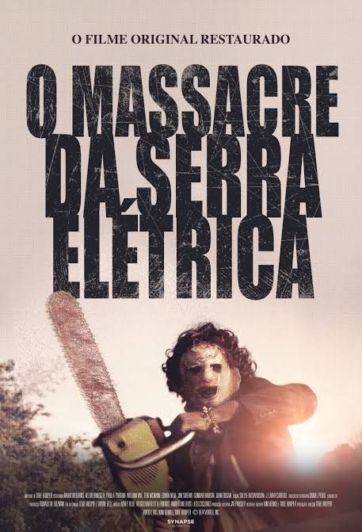

O Massacre da Serra Elétrica é um filme de terror que se tornou um clássico do gênero. A história gira em torno de um grupo de amigos que se deparam com uma família de canibais psicopatas, liderada pelo infame Leatherface, que utiliza uma serra elétrica como arma. O filme é conhecido por sua atmosfera sombria, cenas intensas e a criação de um dos vilões mais icônicos do cinema de terror. Escolhi este filme porque ele representa a essência do horror e continua a influenciar o gênero até hoje.
Sinopse: Cinco jovens viajam pelo interior do Texas para visitar o túmulo do avô de dois deles. No caminho, após uma experiência perturbadora com um carona, eles acabam cruzando com uma família de canibais e são caçados por Leatherface, um assassino mascarado que usa uma motosserra.
